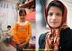

پذيرش > اخبار > نامه سرگشاده فعالان حقوق زنان امروز به دادستانی تهران تحویل داده شد: دستگاه قضایی را (...)


 نامه سرگشاده فعالان حقوق زنان امروز به دادستانی تهران تحویل داده شد: دستگاه قضایی را مسئول پیامدهای اعتصاب غذای نسرین ستوده می دانیم نامه سرگشاده فعالان حقوق زنان امروز به دادستانی تهران تحویل داده شد: دستگاه قضایی را مسئول پیامدهای اعتصاب غذای نسرین ستوده می دانیم
6 آبان 1391 - - نسخه قابل چاپ
تغییر برای برابری: جمعی از فعالان جنبش زنان و مادران کمپین یک میلیون امضا امروز در اعتراض به وضعیت نسرین ستوده نامهای را به دفتر دادستان کل تهران تحویل دادند.در این نامه که به امضای فعالین جنبش زنان و حامیان آنها رسیده است، ضمن ابراز نگرانی از وضعیت نسرین ستوده، از قوهی قضائیه درخواست شده تا به خواستههای قانونی وی ترتیب اثر دهد.امضا کنندگان این نامه بر مسئولیت قوهی قضائیه نسبت به سلامت خانم ستوده تاکید و ضمن اعلام همراهی و همرای با وی از دادستان کل استان تهران خواستهاند تا با تامین حقوق زندانیان و اهمیت به درخواست آنان دامنهی نابرابری و بیعدالتی را کاهش دهد.
دفتر معاونت دادستانی تهران ضمن دریافت این نامه اعلام نموده تا پایان هفتهی جاری به آن پاسخ داداه خواهد شد.
متن این نامه که به صورت سرگشاده نیز منتشر شده است به این شرح است:
نامه سرگشاده فعالان حقوق زنان به دادستان تهران: دستگاه قضایی را مسئول پیامدهای اعتصاب غذای نسرین ستوده می دانیم
دادستان محترم استان تهران
جناب آقای جعفری دولت آبادی
با سلام
همان طور که مستحضر هستید، نسرین ستوده، وکیل پایه یک دادگستری، مدافع حقوق بشر و فعال حقوق زنان، که در پی صدور حکمی سیاسی و ناعادلانه به 6 سال زندان محکوم شده بود، از تاریخ 13 شهریور 1389 در زندان اوین بسر می برد. خانم ستوده از روز چهارشنبه 26 مهر ماه 1391 برای دومین بار دست به اعتصاب غذا زده است. او بار نخست نیزبه مدت 28 روز در مهرماه 1389 و در اعتراض به فشارهای وارده به خود و خانوادهاش به اعتصاب غذا اقدام کرده بود.
نسرین ستوده با گذشت بیش از دو سال از زمان بازداشت تاکنون اجازه مرخصی نداشته و اکنون بیش از سه ماه است که از ملاقات حضوری با خانواده ی خود نیز محروم بوده است. این در حالیست که دسترسی به ملاقات حضوری به ویژه برای زندانیانی که دارای فرزندان خردسال هستند، از ابتدایی ترین حقوق آنها به حساب میآید.
فارغ از ناعادلانه بودن رای صادره علیه نسرین ستوده، حقوق وی به عنوان یک زندانی نیزمدام نقض شده است.از حق دسترسی به تلفن گرفته تا محدودیت برای ملاقات فرزندان و حتی صدور قرارممنوعیت خروج از کشور برای دختر 12 ساله اش، تلاش شده تا وی و اعضای خانواده اش بارها تحت فشارهای روحی و روانی بسیار قرار بگیرند. لذا انتظار می رود کسانی که تمام قد از آرای صادره علیه فعالین سیاسی و حقوق بشری مانند نسرین ستوده حمایت کرده و آن را در چارچوب مقررات و قوانین کشور می دانند، در زمان اجرای حکم نیز حقوق او را به عنوان یک زندانی به رسمیت بشناسند و وی را ازحداقل حقوق قانونی یک زندانی محروم نکنند. تمام زندانیان حق دارند از حقوقی اولیه مانند حق مرخصی و ملاقات حضوری با خانواده برخوردار باشند و پرسش اینجاست که چرا دستگاه قضایی با وجود نقض آشکار این حق در مورد زندانیان، نسبت به این موضوع سکوت اختیارکرده است؟
جناب آقای دولت آبادی، نسرین ستوده در دو سال گذشته دو بار ناگزیر به اعتصاب غذا متوسل شده است. بدون شک اعتصاب غذا نه انتخاب اول هر زندانی برای بیان مطالباتش که آخرین ابزار او برای رساندن صدای اعتراضی است که شنیده نمی شود. اقدامی دشوار که زندانی را وا می دارد تا جانش را بستر اعتراض اش قرار دهد و تبعات جسمانی و لطمات جبران ناپذیر آن را بپذیرد. هدی صابر یکی از زندانیان سیاسی نمونه ی بارزی بود که سال گذشته جان بر سر آن گذاشت.
ما به عنوان جمعی از فعالان جنبش زنان ایران که خود را همراه و هم رای نسرین ستوده می دانیم ضمن ابراز نگرانی از وضعیت نسرین ستوده، دستگاه قضایی را مسئول پیامدهای احتمالی اعتصاب غذای وی قلمداد می کنیم. و از شما نیز به عنوان دادستان کل استان تهران تقاضا داریم تا با تامین حقوق زندانیان و اهمیت به درخواست آنان دامنه نابرابری و بی عدالتی را کاهش دهید. بروز هرگونه لطمات جبران ناپذیر متوجه شما نیز خواهد بود.
اسامی امضا کنندگان به شرح زیر است:
ابوالفضل(پویا)جهاندار- احمد بخشی-احترام شادفر- اعظم بهرامی- افروز مغزی - اكبر مهدي- اکبر وکیلی- الاهه شکرائی- الناز انصاری- الهه امانی- الهه فراهاني- الهه وفایی- امیر رشیدی- امیر کلهر- امیر مومبینی- امیر یعقوبعلی- آرش نصیری اقبالی- آزاد مرادیان- آزاده خسروشاهی- آزاده دواچی- آزاده زیلائی- آزاده فرامرزيها- آسيه اميني- آمنه شیرافکن- آناهیتا نژاد حداد - آیدا سعادت- آیدا قجر- اویس اخوان- بانو صابری- بهروز ستوده- بهمن ستوده- پرتو نوری علا - پروانه راد- پروین ابراهیم زاده- پروین اردلان - پروین عباسی - پروین ملک- پریسا کاکائی - پوران رضایتی- پوران طالب حریری - تارا احمدی- تارا سپهری فر - توران ناظمی - ثریا فلاح - جعفر خدیر- جلوه جواهری - جمال احسانی - جهانشاه جاوید - حامیان مادران پارک لاله /لس آنجلس - حسن عباسی - حسین علوی- حمیده نظامی - حنانه پتكي - خاطره کریمی - خدیجه مقدم - خسرو بندری - خسرو تجربه کار - خیرالنسا شهیدی- داریوش پارسی - دلارام علی - رامین امن گستر- رضا سیاووشی - رضوان مقدم - رها عسکری زاده - روجی شفیعی - رومینا ملکی - رویا کاشفی - زارا امجدیان - زهره ارزنی - زهره اسدپور - زهره صادقی - زینب پیغمبرزاده - ژاله سالاری - ساحل سیستانی - سارا عبادی - ساغر غیاثی - ساقی لقایی - ساناز الله بداشتی - ستاره سجادی - ستاره هاشمی - سحر سجادی - سعدی علیزاده - سعیده سهرابی- سلحشور - سمانه عابدینی- سمانه موسوی - سمیه بهادری - سمیه رشیدی - سهیل پرهیزی - سهیلا ستاری-سوسن طهماسبی - سوفیا صدیق پور - سيیاوش کشـمیری - سیده سعیده اشراقی - سیما مبینی - سیمین بهبهانی- شايا شهوق - شاهین انزلی - شقایق کمالی - شکوفه منتظری - شهرام فداكار - شهلا فروزانفر - شهناز بیات - شیرین شریفی - شیوا پازوکی - شیوا نوجو - صبا واصفی - صبرا رضایی - صبری نجفی - طلعت تقی نیا - عالیه مطلب زاده - علی تارخ - علی طایفی - علی مرزوقی - علی واعظی پور -فاطمه خانی- فاطمه رضایی - فاطمه عزیزی –فروغ عزیزی - فتحیه زرکش - فخری شادفر - فرحناز عمادی - فردین حسینی - فرهاد دفتری -فرحناز محمدی - فرزانه عظیمی - فرهاد میثمی - فروزنده مسرور - فروغ سمیع نیا - فریبا داودی مهاجر - فریبا فرنوش - فریده غایب - فریده کرملویی - فریده یزدی - فواد پاشایی – فولادی - كاويان صادق زاده ميلاني - کاظم علمداری - کاوه کرمانشاهی - کاوه مظفری - کتایون عظیمی فرد - گلناز به گو - گلناز ملک - گودرز سلمانی - لیلا اسدی - لیلا سیف اللهی - لیلا صادقی - لیلا صحت - لیلا موری - لیلا نظری - مادران وین - ماهرخ روستایی - مایک کریمی - مجید محمدی - مجید ملکی- محبوبه حسین زاده- محبوبه عباسقلی زاده - محسن نژاد - محمد افراسیابی - محمد آل احمد - محمد ترابی - محمد شوراب - محمود معتقدی - مرضیه بخشی زاده - مريم امى - مریم پرواز - مریم حسین خواه- مریم حکمت شعار- مریم رحمانی - مریم رستمی - مریم زندی - مریم شفیع پور - مریم قربانی - مریم کاویانی - مژگان ثروتی - مسعود شب افروز- مسعود فتحی - منبره كاظمي - منصوره بهکیش - منصوره شجاعی - منصوره فتحی - منوچهر فاضل - مهدی اسماعیلی- مهدی خان بابا تهرانی - مهران براتی - مهرانگیز اویسی - مهرداد سید عسگری - مهرناز صمدی - مهرنوش اعتمادی - مهری جعفری، وکیل دادگستری - مهدیه فراهانی - مهشید راستی- مهناز پراکند - مو کاظمپور - میترا معینی - میرحمید سالک - میلاد جلالی - مینا دفتری - مینا ملکی- نازلی فرخی - نازنین باهرلو - نازی عظیما - ناهید جعفری- ناهید کشاورز - ناهید میرحاج - ندا زارع - نرگس کرمانشاهی -نرگس طیبات- نسترن موسوی - نسرین افضلی - نسرین بصیری - نسیم خسروی مقدم - نعیمه دوستدار - نفیسه آزاد - نگار سماک نژاد - نگار میرزایی - نگین سهراب خانی - نوشین کشاورزنیا - نوید محبی - نیکزاد زنگنه - نیلوفر گلکار - نیما مشعوف - هادی یوسفی - هادیه درگاهی- هایده تابش - هدا امینیان - وحیده مولوی - ویکتوریا آزاد
آذر محلوجیان - احمد مظاهري - اردشير زارع زاده - آرش آیتی - آرش ایران - آزاده عیدی - آزیتا رضوان - افسون نعمتی - افشین نادری - اکرم خیرخواه - اندیشه جعفری - آیدا مهرانی - ایدین شمس - بنفشه جمالی - بهارا بهروان - بهاره افقهی- بهروز محمودیان - بهنام نیک زاد - پروانه حاجیلو - پریچهر نومانی -پینار فرج زاده - ثریا پروانی - جادی میرمیرانی - حسین فلاح - حسين كياني – حسینی - حميده تقي زاده - داود ستاری - داوود رحیمی - رضا نجفی - رويا صحرائي - زبیده ایرانپور- زرین شقاقی - زهره دهقان - سارا ایمانیان- سایت ما زنان – ستاری - سحر کمال - سدی فخرآبادی - سعید شریفیان - سعیده اسلامی - سلماز مقدم - سمیه افشار -سهیلا میرزایی - سیامک اصلانی استوار - سیاوش آریا - سیاوش رامین - سید جمال طاهری - سیدحنیف ساجدی - سيروس زارع زاده - شاهین دوستدار- شاهین زال تبار - شاهین ضیایی - شهرام فداكار - شهلا صادقیه – شهلاانتصاري - شیوا سنخن – صابریان – صادقیه - صبا کینژاد - صدرا عبدالهي - غزال خاکسار - غزال عسکری زاده - فاطمه آذری - فاطمه عباسى - فخری شادفر - فرح کمانگر - فرحروز رنجبر- فرخ علی یاری- فرخنده جبارزادگان - فرزین اقتصادی - فرشته تجدد - فرشید شیرزاد- فرهاد صدقي - فهمیده عبدی- فیروزه مهاجر - کتایون شیبانی - کمیساریای عالی حقوق بشر ایران در اروپا - کیان غلامی - گندم احتشام - مازیار رضایی - مائده سلطانی - مجید مختاری - محسن اصغري - محسن فرشیدی - محمد غزنویان - محمد نبی جنتی نژاد - مریم مجد - مریم نقی پور - مژگان مسلمي - مهتاب نجم الدین - مهدخت صنعتی - مهدي شريفي- مهرشاد الوندی - مهرنوش ایزدپناه - مهرنوش صحرانورد - مهسا محمدى - مهواره احقری - مهین جلیلوند - مهین علم - میترا کمالی - میترا ویکو - میلاد موسوی - مینا سلطانی - میهن روستا - نازیلا خلخالی - ناهید دریائی - نرگس سقفی - نسترن افضلی - نسترن طارسی - نگار انسان - نیلوفر صمیمی - نیلوفر قاسمی - نیلوفر کشمیری - هادی مهربانی نیاسری - هانی منصوریان - الهه مشایخی - ویدا بیگلری - یاشار امیری
ارسال به
بالاترین
،
توییتر
،
فریندفید
،
فیسبوک
در همين بخش :
 پروین ذبیحی برنده جایزه حقوق بشری سازمان غيردولتى اتريشى سودويند شد پروین ذبیحی برنده جایزه حقوق بشری سازمان غيردولتى اتريشى سودويند شد
پخش کارت پستال و بروشور در روز جهانی زن در تهران
تمدید زمان برای امضای بیانیهی جمعی از فعالان زن به مناسبت هشت مارس
مجوزی که در نطفه خفه شد
بیش از 2000 امضا در اعتراض به تبعیض های آموزشی به مجلس تحویل داده شد
ديگر بخش ها :
طرح یک میلیون امضا
|
مقالات
|
سایت نوشته ها
|
اخبار
|
گزارش كمپين
|
گفت و گو
|
علیه سکوت
|
كوچه به كوچه
|
نامه های شما
|
گزارش ویژه
|
گفتگو با اعضا
|
ویژه سالگرد کمپین
|
تصویر برابری
|
دل آرام علی
|
تریبون
|
مقالات
|
تاریخ شفاهی
|
خارج از چارچوب
|
کتابخانه
|
درباره کمپین
|
کمپین در شهرها
|
کمپین در بند
|
صدای تغییر
|
ویژه 22 خرداد
|
لایحه حمایت از خانواده
|
گالری
|
عشا مومنی
|
امیر یعقوبعلی
|
خدیجه مقدم
|
راحله عسگری زاده و نسیم خسروی
|
پروین اردلان،جلوه جواهری، مریم حسین خواه، ناهید کشاورز
|
زینب پیغمبرزاده
|
سعیده امین، سارا ایمانیان، محبوبه حسین زاده، ناهید کشاورز و همایون نامی
|
احترام شادفر
|
نسیم سرابندی زاده،فاطمه دهدشتی
|
وبلاگ مهمان
|
پرونده خرم آباد
|
دستگیری ها
|
مریم مالک
|
پرستو اللهیاری
|
مهرنوش اعتمادی
|
سمیه رشیدی
|
Other Languages
|
همراهان
|
«فراخوان کمپین ده روز با بهاره هدایت»
| English
|